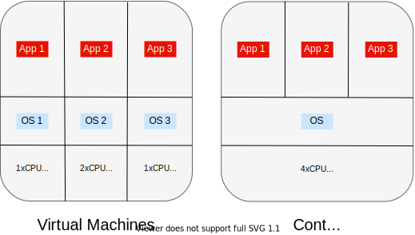

Docker Nedir ve Nasıl Kullanılır?
Kayıt Tarihi:
Bu yazımda son zamanlarda sık sözü edilen konteynerleştirme mantığı ve Docker yazılımı hakkında giriş seviyesinde bazı bilgiler vereceğim, yazılım alanında çalışacaksanız muhtemelen bunları sıklıkla kullanacaksınız.
Anahtar Kelimeler: BusyBox · Container · Containerization · Django · Docker · Docker-Compose · image · imaj · Konteyner · Konteynerleştirme · python · Sanal Makine · Virtual Machine · VPSBir uygulama geliştirirken uygulamanızın kullanacağı harici kaynakları (dependicies) sunucuya yüklersiniz, özellikle birden fazla uygulama geliştiriyorsanız zamanla sunucunuz bir çöplüğe dönüşür. Hatta bazen bir paketin veya frameworkun farklı versiyonlarına ihtiyaç duyan uygulamaları aynı sunucuda barındırmak zorunda kalabilirsiniz. Böyle zorlukların üstesinden gelmek için bir izolasyon stratejisi geliştirmeniz gerekir, mesela Python uygulamaları geliştirirken virtual environment (venv) denilen uygulamadan faydalanırız. Genel bir uygulama geliştirirken buna benzer işletim sistemi seviyesinde soyutlama yapacak bir araca (OS-level-venv) ihtiyaç duyarız.
İşletim sistemi seviyesinde soyutlama için sanal makineler (virtual machines) kullanılabilir; bu çözümde sunucunuz kendi içinde belirli sayıda sanal sunuculara bölünür ve bunların her birinin belirlenen kadar donanım erişimi vardır (bellek, cpu, disk, vs..), her bir sanal makineye ihtiyacınız olan işletim sistemini kurup her bir makinede bir uygulamayı rahatça geliştirirsiniz. Bu yaklaşımda sorun sanal makinelerin hantallığıdır; her bir sanal makine kendine ait sanal bir bios aracılığıyla boot olup açılacak işletim sistemi çalışacak vesaire, bir sürü tantana! Eğer uygulamalarınız aynı sınıf işletim sistemlerinde çalışacaksa ve her bir uygulama için ayrılmış donanıma (dedicated) ihtiyacınız yoksa bu strateji sizin için tankla sinek öldürmeye benzer.
Alternatif çözüm ise konteynerleştirme denilen tekniktir; bu çözümde sunucunuzda adına konteyner (container) denilen yapılar kurarsınız, bu yapılar aslında sunucu işletim sistemi çekirdeğinin birer klonudur ve hepsi aynı donanımı paylaşır. Bu konteynerlerin her biri içerisinde bir uygulamayı diğerlerinden izole bir biçimde geliştirebilirsiniz, ayrıca bunların başlaması ve durması da son derece hızlıdır. Konteynerlerin dezavantajları da aynı işletim sistemi içinde çalışacak uygulamalara sınırlanmasıdır, bir Linux sunucusu için oluşturduğunuz konteyneri bir Windows sunucusunda çalıştıramazsınız; bir de konteynerlerin oluşturulması aşaması sanal makinelerin kurulması aşamasına göre biraz daha detaylı işçilik gerektirir. Konteynerlerin sağladığı en büyük kolaylıklardan biri de uygulamanın dağıtımını (deployment) ciddi ölçüde kolaylaştırmasıdır, yazımın sonunda buna bir örnek vereceğim. 
Konteynerleştirme işini yapmaya yarayan en popüler yazılım Docker yazılımıdır, açık kaynak kodlu (open source) ve ücretsizdir (ücretli planları da mevcut). Şimdi bunun nasıl kullanılacağı ve nasıl konteynerler oluşturabileceğinizi açıklayacağım. Docker yazılımının kurulması işletim sisteminize göre değişiklik gösterir şu sayfadan size uygun bölüme geçip talimatları uygulayarak Docker Engine yazılımını kurun. Kurulumun başarılı olduğunu anlamak için docker run hello-world komutunu çalıştırın (root yetkileriyle çalıştırmanız gerekebilir, farklı bir kullanıcıdaysanız, linux için, başına sudo ekleyin), Docker motoru birşeyler indirip size bir çıktı gösterecektir; hata alırsanız kurulum aşamasını yapamadınız demektir.

Şimdi Docker ile bir konteyner oluşturalım, terminolojiyi biraz anlamamız gerekiyor. Öncelikle konteyner oluşturmak için bir imaja (image) ihtiyacımız var, bunlar bir konteynerin paketlenmiş halidir ve Docker motoru bir imajı kullanarak ondan konteyner oluşturur (işletim sistemi imajları gibi düşünün). Docker sunucularında bir imaj deposu vardır; bu depoda Docker tarafından dağıtılan resmi (official) imajların yanı sıra kullanıcıların yükledikleri imajlar da erişime açıktır, komut satırından bu imajları indirebiliriz. Official imajlar genelde tek elimeden oluşan isimlere sahiptir, mesela az önce çalıştırdığımız komutta geçen hello-world ifadesi bir resmi Docker imajı ismidir. Kullanıcıların yüklediği imajlar genelde kullanici-adi/imaj-adi biçimindedir. Bir imaj indirmek için Docker motorunda pull komutunu kullanırız. Örneğin şimdi docker pull busybox komutunu çalıştırarak Docker'in BusyBox imajını indirelim, bu imaj minimal bir linux çekirdeği imajıdır. Sisteminize yüklediğiniz imajların listesini görmek için docker images komutunu kullanabilirsiniz.
İmajı indirdiğimize göre şimdi konteyneri çalıştırabiliriz: docker run busybox echo "Merhaba Dunya!" komutunu çalıştırın, ekrana bu mesaj yazdırılacaktır. Bu komutla şunlar yapıldı: BusyBox imajı kullanılarak bir konteyner oluşturuldu ve bu konteyner içinde echo "Mehaba Dunya!" komutu çalıştırıldı ve sonuç getirildi, sonra da konteyner kapatıldı. Bu işlemlerin ne kadar kısa bir sürede gerçekleştiğine dikkat edin. Alternatif olarak docker run -it busybox sh komutunu çalıştırırsanız interaktif shell uygulaması konteynerde çalışır ve siz sonlandırıncaya kadar konteyner kapatılmaz, sonlandırmak için CTRL+D yapın.
Bu şekilde istediğiniz imajı kullanarak konteynerler oluşturup sisteminizden izole olarak komutlar çalıştırabilirsiniz. Ama Dcoker kullanımı asıl bundan sonra başlıyor, uygulamanızı geliştirebilmek için kendi imajlarınızı oluşturmanız gerekiyor. Bunun için imajın tarifini veren bir Dockerfile dosyası oluşturursunuz ve uygulama dosyalarınızla bunu bir klasöre alıp Docker motorunda build komutunu kullanırsınız. Ayrıca bir çok uygulama geliştirilirken birden fazla konteyner aynı anda çalıştırılır ve bunların iletişim halinde olması gerekir, yani konteynerler için bir ağ kurulması lazım. Bu tür işlemleri yapmak için Docker-Compose adında yardımcı bir araç vardır. Bu yazımda temel konulara ve Docker mantığına değindiğim için bu gibi konulara girmeyeceğim, internetten araştırıp kolayca öğrenebilirsiniz.
Docker kullanımı deployment aşamasını dramatik ölçüde kolaylaştırır, buna bir örnek olarak şu sayfada bulunan şablona bakabilirsiniz. Django ile web sitesi geliştirdiyseniz bu şablon size uygulamanızı hızlı bir şekilde yayına almanızı sağlayacaktır.
Jupyter Notebook İle Uzak Sunucuda Program Geliştirme
LaTeX Belgesini Word Belgesine Dönüştürmek